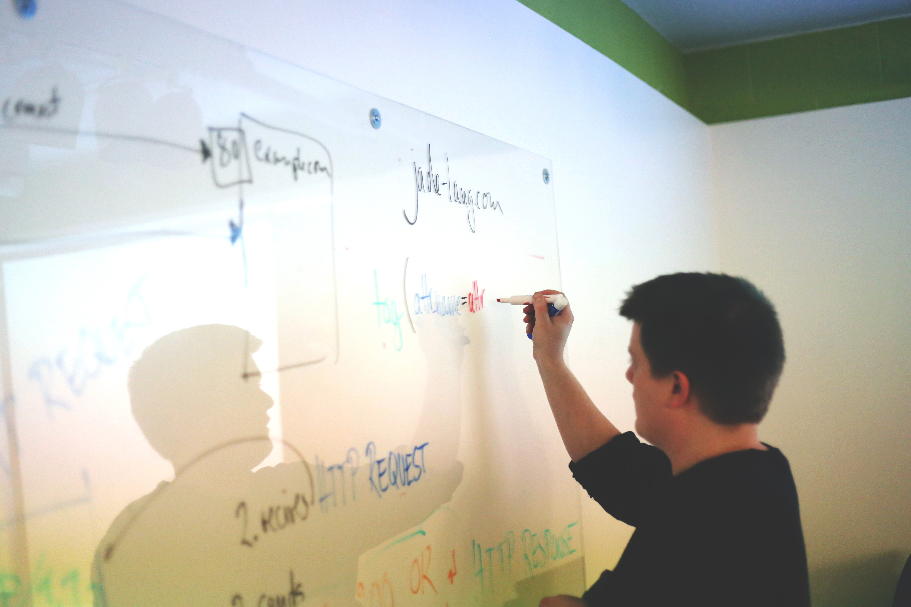

弱勢兒童
你是否曾經想過同一座城市的孩子的資訊以及生活環境落差倒底有多大？你有 沒有想過因為你的關注可以帶給他全世界？
我們每天一樣工作、上學的都市中，存在著一群都市弱勢家庭的孩子。他 們可能住在大門已經破了一大洞的廉價國宅，也可能正面臨父母失和而被棄養 的階段。也許你們正在煩惱下禮拜的期末考該怎麼準備或者是下一餐要準備吃 什麼？但他們更在乎的事情是為什麼全世界的遺棄我。加入我們成為志工的行 列，陪伴並點亮這些孩子心中的那盞燈，如果你覺得你不能改變世界，那加入 我們的行列你可以成為孩子心中的全世界。
服務活動
- 服務活動
我們會在台北市不同的區域選擇一些服務據點，而志工老師會用利用 一個禮拜兩小時的時間進行課業輔導以及志工陪伴
 -
我們會在台北市不同的區域選擇一些服務據點，而志工老師會用利用 一個禮拜兩小時的時間進行課業輔導以及志工陪伴

-
志工訓練、舉辦學習工作坊
志工老師可以進行一些新課程的規劃與開發，並教導參加輔導班的孩 童，降低他們因為家庭因素的學習資訊落差，學習課程還有手工香皂 製作、繪本教學、新聞中的偽科學講座

-
孩童學習成果發表會

目標資金：NTD$200,000
志工招募：10 名
志工招募：10 名
© Vunding 2015